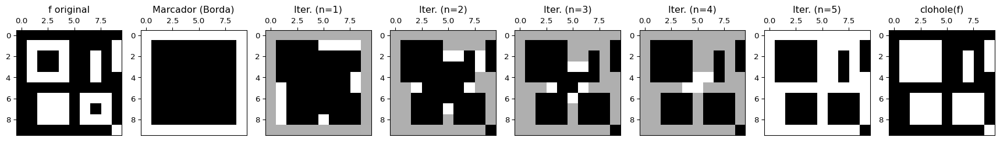
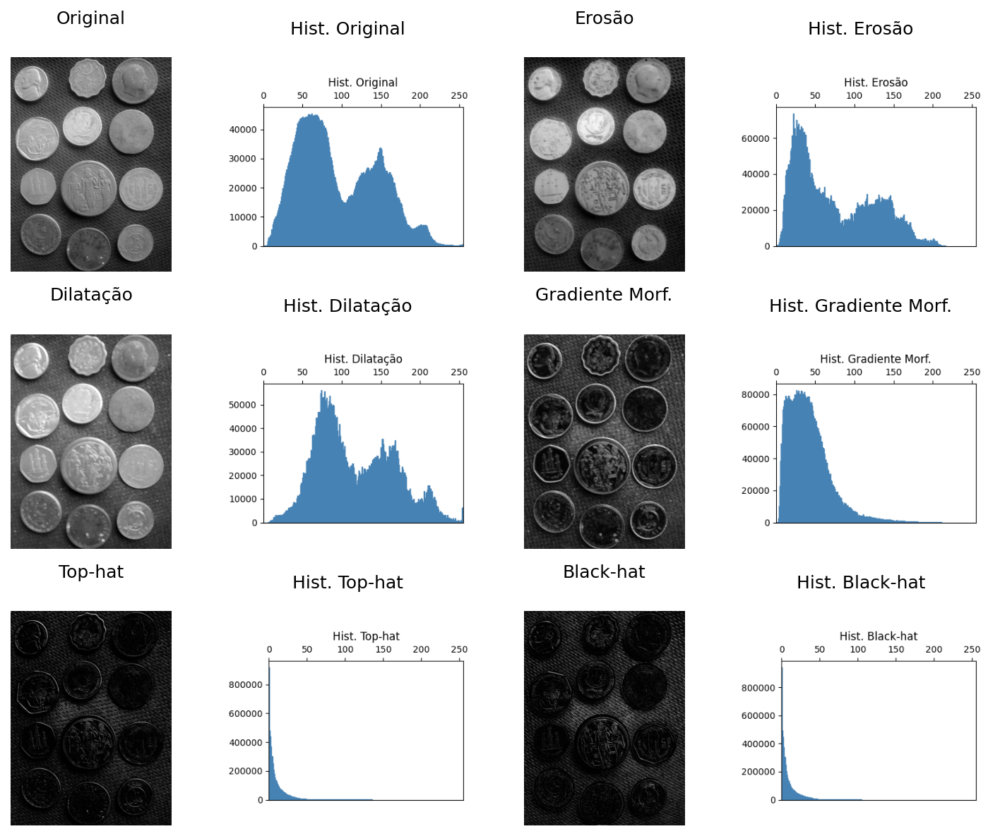
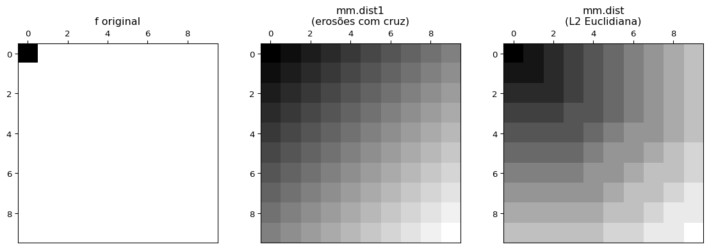
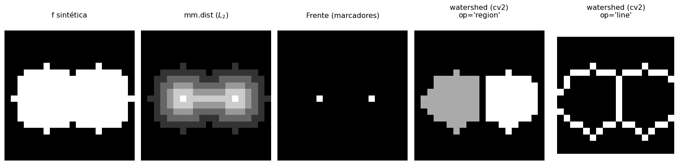

Este capítulo apresenta dois temas fundamentais do Processamento Digital de Imagens (PDI): a morfologia matemática e a segmentação de imagens. A morfologia matemática fornece um arcabouço teórico baseado na teoria dos conjuntos para analisar, refinar e quantificar a forma de objetos em imagens binárias e em tons de cinza, a partir de operadores fundamentais como erosão e dilatação. A segmentação, por outro lado, tem como objetivo particionar a imagem em regiões semanticamente relevantes, separando objetos do fundo e identificando estruturas de interesse.
O capítulo inicia com a limiarização, uma das técnicas mais simples e importantes de segmentação, introduzindo o método automático de Otsu e a análise do histograma por meio da variância interclasses, apresentada inicialmente no primeiro capítulo. Em seguida, são apresentados os principais operadores da morfologia matemática, com destaque para pipelines de limpeza binária que combinam preenchimento de regiões, erosão e dilatação. Por fim, técnicas mais avançadas de segmentação, como o algoritmo da transformada de distância, watershed e o agrupamento por k-means, ampliam a caixa de ferramentas para separação e análise de objetos em imagens.
4.1 Objetivos
Ao final deste capítulo, você será capaz de:
Aplicar limiarização: Compreender o critério automático de Otsu por maximização da variância interclasses (\(\sigma_B^2\)) e escolher o melhor pré-processamento por análise de bimodalidade do histograma;
Dominar morfologia binária: Compreender e aplicar erosão (\(A\ominus B\)) e dilatação (\(A\oplus B\)) como primitivos espaciais, derivando a abertura (\(A\circ B\)), o fechamento (\(A\bullet B\)) e as operações baseadas em reconstrução morfológica (mm.clohole e mm.edgeoff);
Aplicar morfologia em tons de cinza: Extrair bordas e detalhes estruturais utilizando o gradiente morfológico, top-hat e black-hat;
Segmentar por regiões: Construir o pipeline de segmentação por watershed topográfico baseado em marcadores extraídos via transformada de distância;
Segmentar por agrupamento: Utilizar o algoritmo k-means associado ao método do cotovelo para otimização do número de classes \(k\);
Extrair descritores de forma: Rotular componentes conexas e quantificar propriedades geométricas (área, perímetro, circularidade, excentricidade e momentos de Hu) via cv2.findContours.
import os, importlib, urllib.requestimport numpy as npimport matplotlib.pyplot as pltimport cv2from scipy import ndimageBASE_URL ="https://raw.githubusercontent.com/fzampirolli/pdi-vc/master/morph"for f in ["morph.py"]:ifnot os.path.exists(f): urllib.request.urlretrieve(f"{BASE_URL}/{f}", f)import morphimportlib.reload(morph)from morph import mmprint("✅ Ambiente pronto")
✅ Ambiente pronto
4.2 Limiarização
A limiarização (thresholding) é uma das formas mais simples e eficientes de segmentação de imagens. Seu objetivo é classificar cada pixel em duas classes de intensidade, normalmente associadas a objeto e fundo:
em que \(f(x,y)\) representa a intensidade do pixel na imagem original e \(g(x,y)\) a imagem binária resultante.
A escolha do limiar \(T\) é importante para a qualidade da segmentação. O método de Otsu determina automaticamente o limiar ótimo ao maximizar a variância interclasses\(\sigma_B^2\) e definida por:
\(w_0(T)\) e \(w_1(T)\) são as probabilidades acumuladas das classes fundo e objeto;
\(\mu_0(T)\) e \(\mu_1(T)\) são as médias de intensidade dessas classes;
\(\sigma_B^2(T)\) representa a variância interclasses para um dado limiar \(T\).
O método funciona melhor quando o histograma apresenta dois grupos de intensidades relativamente separados. Para isso, o algoritmo avalia todos os limiares possíveis da imagem — tipicamente no intervalo \([0,255]\) para imagens de 8 bits — e seleciona o valor que maximiza a variância entre classes, denotada por \(\sigma_B^2\):
O método de Otsu produz melhores resultados quando o histograma apresenta dois picos bem definidos (bimodalidade), correspondentes ao fundo e ao objeto. Quanto maior a separação entre esses picos e mais pronunciado o máximo de \(\sigma_B^2\), mais confiável tende a ser o limiar obtido.
Em imagens com iluminação não uniforme ou múltiplas regiões de intensidade, técnicas de limiarização adaptativa — nas quais o limiar é calculado localmente — costumam produzir segmentações mais robustas.
O índice \(B\) em \(\sigma_B^2\) significa between classes (entre classes). Assim, \(\sigma_B^2\) representa a variância entre as classes (between-class variance).
4.2.1 Imagem de Moedas
A imagem utilizada para praticar a segmentação é uma fotografia de coleção de moedas de diferentes países e épocas (Figura 4.1). Crédito: GAZI.MD.AHAD (CC BY-SA 4.0). Ela apresenta objetos circulares com bordas bem definidas, sendo ideal para demonstrar limiarização, operadores morfológicos, transformada de distância, watershed e descritores de forma.
Figura 4.1: Imagem com moedas de vários tipos. Crédito: GAZI.MD.AHAD (CC BY-SA 4.0).
4.2.2 Escolha do Pré-processamento para o Otsu
A qualidade do Otsu depende diretamente de quão bimodal é o histograma da imagem de entrada. A imagem original de moedas tem iluminação não uniforme e moedas escuras (cobre oxidado) próximas em intensidade ao fundo escuro, tornando o histograma pouco bimodal.
Para corrigir essas limitações, serão avaliadas duas técnicas clássicas de pré-processamento, apresentadas no capítulo anterior, aplicadas antes da etapa de limiarização:
Técnica
O que faz
Quando usar
CLAHE
Equalização de histograma adaptativa local
Baixo contraste global ou regional
Gaussiano
Suavização por convolução com gaussiana
Ruído de alta frequência (textura do fundo)
A função cv2.createCLAHE(clipLimit, tileGridSize) divide a imagem em blocos e aplica equalização de histograma em cada um, limitando a amplificação de ruído pelo parâmetro clipLimit. O filtro Gaussiano (cv2.GaussianBlur) suaviza texturas finas que poderiam criar falsos picos no histograma.
Para comparar objetivamente qual pré-processamento gera melhor entrada para o Otsu, plota-se para cada versão: a imagem, o histograma com \(T^*\) marcado, a curva \(\sigma_B^2(T)\) e o resultado da binarização.
NotaCritério de comparação
A versão com maior valor de \(\sigma_B^2\) no pico é a que oferece melhor separação bimodal — e portanto a melhor entrada para o Otsu.
import cv2, iodef otsu_criterio(img): h=mm.hist(img); p=h/h.sum();# histograma e probabilidades sigma2=np.zeros(len(p)) for T inrange(1,len(p)): # percorre limiares w0,w1=p[:T].sum(),p[T:].sum() # probabilidades das classesif w0*w1==0: continue# evita divisão por zero mu0=(np.arange(T)*p[:T]).sum()/w0 # média fundo mu1=(np.arange(T,len(p))*p[T:]).sum()/w1 # média objeto sigma2[T]=w0*w1*(mu0-mu1)**2# σ²B(T)return sigma2,np.argmax(sigma2) # curva e T ótimodef fig2img(fig): b=io.BytesIO(); fig.savefig(b,format='png',dpi=100) # figura → buffer plt.close(fig); b.seek(0)return np.array(plt.imread(b)) # buffer → arraydef plot_curve(y,T,title,ylabel,color): fig,ax=plt.subplots(figsize=(4,3)) ax.plot(y,color=color) if ylabel=="σ²B"else ax.bar(range(len(y)),y,color=color,width=1) ax.axvline(T,color='red',lw=2,label=f"T*={T}") # limiar ótimo ax.set(title=title,xlabel="T"if ylabel=="σ²B"else"Intensidade",ylabel=ylabel) ax.legend(fontsize=8); plt.tight_layout()return fig2img(fig)# ── Pré-processamentos ───────────────────────────────────────────────────────clahe=cv2.createCLAHE(clipLimit=2.0,tileGridSize=(8,8))img_clahe = clahe.apply(img_coins_gray)img_gauss = cv2.GaussianBlur(clahe.apply(img_coins_gray),(5,5),0)imgs0=[("Original",img_coins_gray), ("CLAHE",img_clahe), ("CLAHE+Gauss",img_gauss)]# ── Tabela comparativa ───────────────────────────────────────────────────────print(f"{'Versão':<18}{'T*':>6}{'σ²B pico':>14}")print("-"*40)imgs,titles=[],[]for nome,img in imgs0: sigma2,T=otsu_criterio(img) # calcula σ²B(T)print(f"{nome:<18}{T:>6}{sigma2[T]:>14.4e}") imgs += [ img, # imagem plot_curve(mm.hist(img),T,f"Hist T*={T}","Freq.","steelblue"), plot_curve(sigma2,T,"σ²B(T)","σ²B","darkorange"), mm.threshold(img) # Otsu final ] titles += [nome,f"Hist T*={T}","σ²B(T)",f"Otsu T*={T}"]# ── Exibição final ───────────────────────────────────────────────────────────mm.show(imgs,titles=titles,cols=4,figsize=(12,12),dpi=200)
Versão T* σ²B pico
----------------------------------------
Original 105 1.9437e+03
CLAHE 122 2.4695e+03
CLAHE+Gauss 123 2.4283e+03
Figura 4.2: Comparação dos pré-processamentos: imagem | histograma+T* | σ²B(T) | Otsu. A melhor separação bimodal indica o limiar mais confiável.
4.2.3 Resultado: CLAHE como Melhor Pré-processamento
A análise da Figura 4.2 mostra que o CLAHE produz a maior separação bimodal (\(\sigma_B^2 \approx 2{,}47 \times 10^3\), \(T^* = 122\)), superando até mesmo a combinação CLAHE+Gaussiano. O filtro Gaussiano, embora suavize ruídos de textura, reduz levemente a separação inter-classe ao homogeneizar intensidades próximas ao limiar.
DicaInterpretação visual
No histograma do CLAHE, observe o vale profundo em torno de \(T^* = 122\), separando claramente dois grupos: pixels de fundo (intensidades baixas) e pixels de moedas (intensidades altas). Na curva \(\sigma_B^2(T)\), o pico alto e estreito confirma que esse limiar é robusto.
4.3 Morfologia Matemática
A morfologia matemática é uma teoria baseada em conjuntos utilizada para analisar a forma e a estrutura de objetos em imagens. Diferentemente dos filtros lineares apresentados no Capítulo 3, os operadores morfológicos são não lineares, pois se baseiam em operações de mínimo, máximo e inclusão espacial, em vez de combinações lineares de intensidades. Esses operadores atuam sobre a vizinhança de cada pixel por meio de um elemento estruturante\(\mathbb{B}\), responsável por definir a forma e o tamanho da região analisada.
Em imagens binárias, o elemento estruturante transladado para a posição \(x\) é definido como:
\[
\mathbb{B}_x = \{ x + b \mid b \in \mathbb{B} \} \cap \mathbb{E}, \quad x \in \mathbb{E}
\]
A interseção com \(\mathbb{E}\) garante que apenas as posições dentro do domínio da imagem sejam consideradas — quando \(x\) está próximo à borda, parte de \(\mathbb{B}_x\) pode cair fora de \(\mathbb{E}\) e é simplesmente descartada.
Quando o elemento estruturante associa pesos a seus elementos — isto é, \(b: \mathbb{B} \to \mathbb{Z}\) — ele é denominado função estruturante ou elemento estruturante não plano.
Desenvolvida por Matheron e Serra na década de 1960 para imagens binárias e posteriormente estendida a tons de cinza, a morfologia matemática fundamenta operadores como gradiente morfológico, top-hat, watershed e transformada de distância, todos derivados de dois primitivos: erosão e dilatação(Matheron, 1975; Serra, 1982).
4.3.1 Erosão e Dilatação
Os dois operadores primitivos são definidos de forma unificada para imagens em tons de cinza (\(f: \mathbb{E} \to \mathbb{Z}\)) e, por restrição ao domínio \(\{0,1\}\), também para imagens binárias.
4.3.1.1 Erosão
A Erosão de \(f\) pela função estruturante \(b: \mathbb{B} \to \mathbb{Z}\) é definida por:
Na prática, a erosão substitui cada pixel pelo menor valor encontrado em sua vizinhança.
O valor no pixel \(x\) é o mínimo de \(f(y) - b(y-x)\) sobre a vizinhança \(\mathbb{B}_x\). Valores positivos no elemento estruturante forçam o resultado para baixo, ‘cavando’ a imagem mais profundamente e favorecendo a erosão. No caso plano (\(b \equiv 0\)), a expressão reduz-se a:
Na prática, a dilatação substitui cada pixel pelo maior valor presente na vizinhança definida pelo elemento estruturante.
O valor no pixel \(x\) é o máximo de \(f(y) + b(x-y)\) sobre a vizinhança \(\mathbb{B}_x\): o argumento \(x - y\) corresponde a avaliar o transposto \(\hat{b}\), o que é consistente com a dualidade erosão–dilatação. No caso plano (\(b \equiv 0\)), a expressão reduz-se a:
e em imagens binárias equivale a exigir que \(\hat{\mathbb{B}}\), transladado para \(x\), intersecte\(A\):
\[
A \oplus B = \{\, z \in \mathbb{E} \mid \hat{\mathbb{B}}_z \cap A \neq \varnothing \,\}
\]
Efeito: expande objetos, preenchendo lacunas menores que \(B\).
NotaDualidade erosão–dilatação
Erosão e dilatação são duais pelo complemento. Isso significa que um operador pode ser completamente obtido a partir do outro, desde que se atue sobre o complemento da imagem utilizando o elemento estruturante refletido \(\hat{B}\):
\[
(A \ominus B)^c = A^c \oplus \hat{B} \quad \Longleftrightarrow \quad A \ominus B = (A^c \oplus \hat{B})^c
\]
De forma análoga, a dilatação também pode ser obtida a partir da erosão:
\[
(A \oplus B)^c = A^c \ominus \hat{B} \quad \Longleftrightarrow \quad A \oplus B = (A^c \ominus \hat{B})^c
\]
Em termos práticos, erodir o objeto isolado equivale a dilatar o seu plano de fundo (e vice-versa). Na implementação do pacote morph.py, as versões didáticas mm.ero0 e mm.dil0 tornam explícita essa estrutura por meio de laços (loops) explícitos, enquanto mm.ero e mm.dil delegam as operações ao OpenCV visando eficiência computacional.
Condições de contorno e restrições finitas
Na teoria matemática pura (em espaços contínuos ou discretos infinitos \(\mathbb{Z}^2\)), essa equivalência é absoluta. Contudo, no ambiente computacional sobre matrizes finitas, existem duas restrições para que a igualdade seja estritamente válida:
Equivariância por translação: O operador deve ser equivariante por translação — isto é, deslocar a entrada e depois aplicar o operador deve produzir o mesmo resultado que aplicar o operador e depois deslocar a saída. Quando o elemento estruturante \(B\) varia com a posição do pixel (morfologia variante no espaço), essa propriedade é quebrada e a dualidade deixa de valer em geral.
Condições de contorno: Ao processar as bordas da matriz, o comportamento atribuído aos pixels externos à imagem influi diretamente no resultado. Para que a dualidade se mantenha, a estratégia de preenchimento de borda da erosão deve ser o complemento exato da adotada na dilatação: se a erosão assume que o exterior é preenchido (\(255\)), a dilatação correspondente deve assumir que o exterior de \(A^c\) é vazio (\(0\)).
Para ilustrar numericamente os operadores morfológicos e a dualidade erosão–dilatação, a Figura 4.3 apresenta uma imagem binária 10×10 processada com um elemento estruturante em formato de “L”. Na implementação de morph.py, a origem de \(B\) é fixada no centro geométrico da máscara — posição \((1,1)\) para um kernel 3×3 — e deve ser um elemento ativo para que a erosão se comporte corretamente (conforme discutido anteriormente). O \(B_L\) definido a seguir satisfaz essa condição. A ?fig-04-erosao complementa a análise com um simulador interativo da erosão, permitindo visualizar o deslocamento do elemento estruturante sobre a imagem e identificar as posições em que ele permanece completamente contido no objeto.
A = np.array([ [0,0,0,0,0,0,0,0,0,0], [0,0,0,1,1,1,0,0,0,0], [0,0,1,1,1,1,1,0,0,0], [0,1,1,1,1,1,1,1,0,0], [0,1,1,1,1,1,1,1,0,0], [0,1,1,1,1,1,1,0,0,0], [0,0,1,1,1,1,1,1,0,0], [0,0,0,1,1,1,1,0,0,0], [0,0,0,0,1,0,0,0,0,0], [0,0,0,0,0,0,0,0,0,0]], dtype=np.uint8) *255B_L = np.array([[1,0,0], [1,1,0], [1,1,0]], dtype=np.uint8) # origem no centro (1,1), elemento ativo# Transposto (reflexão em ambos os eixos): B̂ usado na dilatação da dualidadeB_hat = np.flip(B_L)# Erosão de A por B_Limg_ero0 = mm.ero0(A, B_L)# Validação da dualidade: (A ⊖ B)^c = A^c ⊕ B̂A_c =255- A # complemento de Aero_c =255- img_ero0 # complemento da erosão — lado esquerdodil_Ac = mm.dil0(A_c, B_hat) # lado direitodualidade_ok = np.array_equal(ero_c, dil_Ac)print(f"Dualidade (A ⊖ B)^c == A^c ⊕ B̂ : {dualidade_ok}")mm.show( [A, A_c, img_ero0, ero_c, dil_Ac], titles=["A", "Aᶜ", "A ⊖ B", "(A ⊖ B)ᶜ", "Aᶜ ⊕ B̂"], cols=5, figsize=(15, 3))
Dualidade (A ⊖ B)^c == A^c ⊕ B̂ : True
Figura 4.3: Erosão e dilatação em imagem binária 10×10 com elemento estruturante ‘L’ assimétrico 3×3. Validação da dualidade erosão–dilatação.
4.3.2 Abertura e Fechamento
Combinando erosão e dilatação obtêm-se dois operadores de grande utilidade prática:
Abertura (opening) — erosão seguida de dilatação pelo mesmo \(B\): \[
A \circ B = (A \ominus B) \oplus B
\tag{4.5}\]
Fechamento (closing) — dilatação seguida de erosão pelo mesmo \(B\): \[
A \bullet B = (A \oplus B) \ominus B
\tag{4.6}\]
O OpenCV aplica o mesmo B nas duas etapas (assume simetria), o que equivale a \((A \ominus B) \oplus B\) para abertura e \((A \oplus B) \ominus B\) para fechamento.
Tabela 4.1: Propriedades de abertura e fechamento.
Operador
Sequência
Efeito principal
Abertura \(A \circ B\)
erosão → dilatação
Remove estruturas incapazes de conter o elemento estruturante; suaviza contornos externos
Fechamento \(A \bullet B\)
dilatação → erosão
Preenche buracos menores que \(B\); suaviza contornos internos
Propriedade importante: ambos são idempotentes — \((A \circ B) \circ B = A \circ B\) — aplicar o operador duas vezes produz o mesmo resultado que uma vez.
Na prática, abertura e fechamento são frequentemente aplicados em sequência para remover simultaneamente ruído externo e preencher buracos internos. A função mm.asf (Alternating Sequential Filter) generaliza essa ideia: aplica abertura e fechamento alternadamente, com elemento estruturante crescente a cada iteração \(i\) via mm.sesum(b, i). As sequências disponíveis são:
Tabela 4.2: Sequências do filtro sequencial alternado mm.asf.
Sequência
Ordem
Uso típico
'OC'
abertura → fechamento
remove ruído externo antes de fechar buracos
'CO'
fechamento → abertura
fecha buracos antes de remover ruído externo
'OCO'
abertura → fechamento → abertura
prioriza remoção de ruído
'COC'
fechamento → abertura → fechamento
prioriza preenchimento de buracos
O parâmetro n controla o número de iterações — a cada iteração \(i\), o elemento estruturante cresce por soma de Minkowski (mm.sesum), o que equivale a aplicar filtros progressivamente maiores. O resultado é uma suavização morfológica multiescala que preserva melhor as estruturas relevantes do que uma única abertura ou fechamento com kernel grande. Ver na Figura 4.4 um exemplo de uso da abertura e fechamento na imagem das moedas.
Figura 4.4: Abertura, fechamento, composição e filtro sequencial alternado aplicados à binarização Otsu das moedas com CLAHE. Elemento estruturante: disco 13×13.
4.3.3 Reconstrução Morfológica
A reconstrução morfológica propaga uma imagem marcador\(f\) dentro de uma imagem máscara\(g\), garantindo que o resultado nunca ultrapasse \(g\). Define-se a dilatação geodésica (condicionada à máscara) como:
\[
f \oplus_g b = (f \oplus b) \wedge g
\]
onde \(\wedge\) denota o mínimo ponto-a-ponto. A operação é iterada até convergência:
\[
(f \oplus_g b)^\infty = \bigl(\cdots\bigl((f \wedge g) \oplus_g b\bigr) \oplus_g b \cdots\bigr) \oplus_g b
\]
produzindo a reconstrução morfológica de \(f\) sob \(g\):
A iteração é repetida até estabilidade, isto é, até que duas iterações consecutivas produzam o mesmo resultado.
Em morph.py: mm.infrec(f, g, b) dilata \(f\) dentro de \(g\) até convergir.
A reconstrução morfológica é significativamente mais robusta que a abertura convencional porque filtra estruturas indesejadas sem alterar a morfologia dos objetos preservados. Enquanto a abertura suaviza cantos e deforma contornos devido à aplicação irrestrita do elemento estruturante, a reconstrução geodésica resgata os limites exatos dos objetos que interceptam o marcador, conforme ilustrado na Figura 4.6 com o elemento estruturante em cruz da Figura 4.5.
Figura 4.5: Elemento estruturante em formato de cruz (\(B_{\text{cruz}}\)) utilizado para conectividade-4.
# 1. Definição da Máscara (g): Imagem 10x10 com dois objetos isoladosg = np.array([ [0,0,0,0,0,0,0,0,0,0], [0,1,1,1,0,0,0,1,1,0], [0,1,1,1,1,0,0,1,1,0], [0,1,1,1,1,0,0,0,0,0], [0,1,1,1,1,0,0,0,0,0], [0,1,1,1,0,0,0,0,0,0], [0,0,1,1,1,0,0,1,0,0], [0,0,1,1,1,0,0,1,1,0], [0,0,0,1,0,0,0,0,0,0], [0,0,0,0,0,0,0,0,0,0]], dtype=np.uint8) *255B_cruz = mm.secross()# 2. Geração do Marcador (f)f = mm.ero(g, mm.sebox())# 3. Iterações da Dilatação Condicionada automatizadas em laçoiteracoes = []titulos_iteracoes = []img_atual = f.copy()for i inrange(1, 6): img_add = img_atual*80 img_atual = mm.cdil(img_atual, g, B_cruz) iteracoes.append(img_add+img_atual) titulos_iteracoes.append(f"Dilatação Cond. (n={i})")# Reconstrução Geodésica Final via biblioteca (ponto de controle)img_reconstruida = mm.infrec(f, g, B_cruz)# Verificação de convergência (o passo 5 deve ser idêntico à reconstrução final)convergencia_ok = np.array_equal(img_reconstruida, iteracoes[-1])print(f"✅ Reconstrução alcançou estabilidade na iteração 5: {convergencia_ok}")# 4. Exibição do pipeline evolutivo (Montagem dinâmica das listas)mm.show( [g, f] + iteracoes + [img_reconstruida], titles=["Máscara (g)", "Marcador (f)"] + titulos_iteracoes + ["Reconstrução Final R_g(f)"], cols=8, figsize=(18, 3))
✅ Reconstrução alcançou estabilidade na iteração 5: False
Figura 4.6: Pipeline de Reconstrução Morfológica por Dilatação Condicionada: a máscara contém dois objetos, o marcador isola apenas o núcleo do objeto principal, e as iterações subsequentes em laço reconstroem sua forma exata até a convergência.
4.3.4 Preenchimento de Buracos e Remoção de Bordas
Dois operadores baseados em reconstrução morfológica completam o pipeline de limpeza binária:
Preenchimento de buracos (mm.clohole) fecha qualquer buraco completamente cercado pelo objeto, independentemente do tamanho, sem alterar os contornos externos. O marcador é uma moldura (frame) — imagem com pixels ativos apenas na borda — aplicada sobre o complemento \(f^c\):
Remoção de objetos de borda (mm.edgeoff) elimina todos os objetos que tocam a borda da imagem, preservando apenas os completamente internos. O marcador é uma moldura aplicada sobre \(f\):
\[
\text{edgeoff}(f) = f \setminus R_f^\delta(\text{frame}(f))
\tag{4.9}\]
NotaComparação dos dois operadores
Operador
Marcador
Máscara
Efeito
mm.clohole
frame de \(f^c\)
\(f^c\)
Preenche buracos internos
mm.edgeoff
frame de \(f\)
\(f\)
Remove objetos que tocam a borda
A evolução passo a passo dessas transformações geodésicas pode ser acompanhada nas figuras a seguir. A Figura 4.7 ilustra o mecanismo de inundação controlada do operador mm.clohole, evidenciando como a frente de onda preenche o plano de fundo externo e deixa isoladas apenas as cavidades internas. Em contrapartida, a Figura 4.8 detalha a dinâmica do operador mm.edgeoff, onde os objetos ancorados nas extremidades da matriz são integralmente mapeados a partir do frame limítrofe e, em seguida, eliminados por meio da subtração morfológica, restando exclusivamente os elementos totalmente contidos no domínio interno da imagem. A conectividade da propagação geodésica é controlada pelo elemento estruturante: mm.sebox() (vizinhança de 8) inclui componentes diagonais, enquanto mm.secross() (vizinhança de 4) os exclui — o que afeta quais objetos são atingidos pelo frame e, portanto, quais são preservados ou removidos.
# Função auxiliar unificada para gerar o pipeline iterativo com realce visualdef gerar_pipeline_reconstrucao(marcador, mascara, kernel, passos=4, fator=80): iteracoes, titulos = [], [] img_atual = marcador.copy()for i inrange(1, passos +1): img_visual = img_atual * fator img_atual = mm.cdil(img_atual, mascara, kernel) iteracoes.append(img_visual + img_atual) titulos.append(f"Iter. (n={i})")return iteracoes, titulos# Imagem binária 10x10 com 3 cenários: objeto com buraco, objeto isolado e objeto na bordaf = np.array([ [0,0,0,0,0,0,0,0,0,0], [0,1,1,1,1,0,0,0,0,1], [0,1,0,0,1,0,0,1,0,1], [0,1,0,0,1,0,0,1,0,1], [0,1,1,1,1,0,0,1,0,0], [0,0,0,0,0,0,0,0,0,0], [0,0,1,1,1,0,1,1,1,0], [0,0,1,1,1,0,1,0,1,0], [0,0,1,1,1,0,1,1,1,0], [0,0,0,0,0,0,0,0,0,1]], dtype=np.uint8) *255B_cruz = mm.secross()f_c = mm.neg(f) # Utiliza o operador de negação nativo da mm# ── PIPELINE CLOHOLE ──────────────────────────────────────────────────────────# O marcador do clohole teórico é a borda externa marcador_ch = mm.frame(f, border=1) iters_ch, tits_ch = gerar_pipeline_reconstrucao(marcador_ch, f_c, B_cruz, passos=5)# Resultado final calculado por extenso e validado com a função nativa mm.cloholeimg_clohole = mm.neg(mm.infrec(marcador_ch, f_c, B_cruz))print(f"✅ Validação clohole: {np.array_equal(img_clohole, mm.clohole(f))}")mm.show( [f, marcador_ch] + iters_ch + [img_clohole], titles=["f original", "Marcador (Borda)"] + tits_ch + ["clohole(f)"], cols=8, figsize=(18, 3), axis=True)
✅ Validação clohole: True

Figura 4.7: Pipeline de preenchimento de buracos (clohole): o marcador é gerado restringindo o frame da borda ao complemento \(f^c\). As iterações de dilatação condicionada preenchem o fundo externo e o operador final preserva unicamente os buracos internos isolados.
Figura 4.8: Pipeline de eliminação de estruturas de borda (edgeoff): o marcador captura as raízes conectadas às extremidades da matriz, a reconstrução delimita a extensão desses elementos e a subtração booleana preserva unicamente os objetos totalmente internos.
4.3.5 Pipeline de Limpeza Binária com CLAHE
Com base na análise anterior — em que o CLAHE fornece a melhor separação bimodal (\(\sigma_B^2 \approx 2{,}47 \times 10^3\)) e o operador mm.clohole preenche satisfatoriamente as cavidades internas das moedas —, o pipeline final de segmentação, ilustrado na Figura 4.9, é estruturado pelo seguinte fluxo computacional:
Após a etapa do mm.clohole, aplica-se uma abertura morfológica com um elemento estruturante de dimensões amplas (mm.sedisk(33), correspondente a um disco de raio 33). Essa operação visa eliminar pequenos artefatos e regiões residuais, e resíduos de fundo que o processo de preenchimento geodésico pode preencher artefatos de segmentação no fundo que ficaram completamente cercados após a abertura inicial, não necessariamente ligados às fronteiras. Observa-se também que, devido à presença de moedas tangenciando, mas não tocando os limites da matriz, o operador mm.edgeoff subsequente não remove nenhuma moeda, fazendo com que a imagem final equivalha ao resultado da abertura restrito aos objetos estritamente internos.
DicaPor que a abertura após o clohole?
O operador mm.clohole preenche todos os buracos fechados, incluindo eventuais artefatos de segmentação no plano de fundo que tenham sido isolados acidentalmente. A abertura morfológica (erosão seguida de dilatação) remove eficientemente esses objetos espúrios menores que o contorno do kernel, preservando as moedas genuínas devido à sua propriedade de filtragem geométrica por inclusão.
# ── Pré-processamento: apenas CLAHE img_clahe0 = cv2.createCLAHE(clipLimit=2.0, tileGridSize=(8, 8)).apply(img_coins_gray)# ── Etapa 1: Binarização Otsuimg_bin = mm.threshold(img_clahe0)# ── Etapa 2: Abertura — remove ruídos brancos de fundoimg_open = mm.open(img_bin, mm.sedisk(9))# ── Etapa 3: clohole — fecha todos os buracos internosimg_hole = mm.clohole(img_open)# ── Etapa 4: Abertura (kernel grande) — remove artefatos do cloholeimg_limpo = mm.open(img_hole, mm.sedisk(33))# ── Etapa 5: edgeoff — remove objetos que tocam a borda img_final = mm.edgeoff(img_limpo)mm.show( [img_clahe0, img_bin, img_open, img_hole, img_limpo, img_final], titles=["CLAHE", "Otsu", "Abertura (r=9)","clohole", "Abertura (r=33)", "Final (edgeoff)"], cols=6, figsize=(18, 6))
Figura 4.9: Pipeline completo de segmentação com CLAHE: Otsu → fechamento → clohole → abertura (remoção de ruído) → edgeoff.
4.3.6 Morfologia em Tons de Cinza
Os operadores morfológicos estendem-se para imagens em tons de cinza substituindo as operações de conjunto por mínimo (erosão) e máximo (dilatação), conforme definido nas Equação 4.3 e Equação 4.4. Para elemento estruturante plano (\(b \equiv 0\)), erosão reduz-se ao mínimo local e dilatação ao máximo local.
Três operadores derivados são especialmente úteis:
Gradiente morfológico — destaca bordas como a diferença entre dilatação e erosão: \[
\text{grad}_B(f) = (f \oplus B) - (f \ominus B)
\tag{4.10}\]
Top-hat — destaca estruturas brilhantes menores que o elemento estruturante (diferença entre \(f\) e sua abertura): \[
\text{top-hat}_B(f) = f - (f \circ B)
\tag{4.11}\]
Black-hat — destaca estruturas escuras menores que o elemento estruturante (diferença entre o fechamento e \(f\)): \[
\text{black-hat}_B(f) = (f \bullet B) - f
\tag{4.12}\]
Top-hat extrai elementos brilhantes que são menores que o elemento estruturante \(B\), enquanto o Black-hat extrai elementos escuros menores que \(B\).
Os três operadores, ilustrados na Figura 4.10, estão disponíveis em mm.gradm, mm.tophat e mm.blackhat.
import ioimport matplotlib.pyplot as pltimport numpy as npdef fig2img(fig): b = io.BytesIO(); fig.savefig(b, format='png', dpi=100); plt.close(fig); b.seek(0)return (plt.imread(b)[:, :, :3] *255).astype(np.uint8)def plot_hist(img, title): fig, ax = plt.subplots(figsize=(4, 3)) h = mm.hist(img)# CORREÇÃO: range usa len(h) dinamicamente para casar com o retorno da biblioteca ax.bar(range(len(h)), h, color='steelblue', width=1, edgecolor='steelblue') ax.set(title=title, xlim=(0, 255)); plt.tight_layout()return fig2img(fig)# 1. Processamento morfológico baseB = mm.sedisk(19)operadores = [ ("Original", img_coins_gray), ("Erosão", mm.ero(img_coins_gray, B)), ("Dilatação", mm.dil(img_coins_gray, B)), ("Gradiente Morf.", mm.gradm(img_coins_gray, B)), ("Top-hat", mm.tophat(img_coins_gray, B)), ("Black-hat", mm.blackhat(img_coins_gray, B))]# 2. Montagem dinâmica do par: [Imagem, Histograma]imgs, titles = [], []for nome, img in operadores: imgs += [img, plot_hist(img, f"Hist. {nome}")] titles += [nome, f"Hist. {nome}"]# 3. Exibição final em grade de duas colunas (Imagem | Histograma)mm.show(imgs, titles=titles, cols=4, figsize=(10, 8))

Figura 4.10: Morfologia em tons de cinza emparelhada com seus respectivos histogramas: imagem seguida por sua distribuição de frequências de intensidade. Elemento estruturante: disco de raio 19.
Os operadores morfológicos apresentados anteriormente serão agora utilizados como ferramentas de refinamento e geração de marcadores para métodos de segmentação mais avançados, apresentados a seguir.
4.4 Segmentação de Imagens: Fundamentação e Taxonomia
A segmentação de imagens consiste em dividir a imagem em regiões associadas a objetos ou estruturas de interesse. Em PDI, ela representa a transição entre o processamento de baixo nível — como filtragem e realce — e etapas de análise mais avançadas, como extração de características, reconhecimento e interpretação da cena.
Formalmente, o objetivo da segmentação consiste em decompor o domínio espacial completo de uma imagem, denotado por \(\Omega\), em uma partição de subconjuntos \(\{R_1, R_2, \ldots, R_n\}\) que satisfaça simultaneamente os critérios de completeza e disjunção:
Cada sub-região \(R_i\) deve constituir um domínio homogêneo segundo um predicado de similaridade definido sobre propriedades locais — intensidade, cor ou textura — e, concomitantemente, ser distinta em relação às regiões adjacentes. As abordagens para a obtenção dessa partição organizam-se em três famílias, fundamentadas em critérios de continuidade, conectividade e similaridade estatística, conforme sintetizado na Tabela 4.3.
Tabela 4.3: Taxonomia dos métodos de segmentação baseados em propriedades de homogeneidade e conectividade espacial.
Abordagem
Critério Topológico-Espacial
Operadores de Referência
Limiarização
Descontinuidade e particionamento do espaço de intensidades
Critério de Otsu, Limiarização Global e Local
Baseada em Regiões
Homogeneidade local e busca por conectividade
Crescimento de Regiões, Watershed por Inundação
Agrupamento (Clustering)
Similaridade e otimização em espaços de características
Algoritmo \(k\)-means, Modelos de Mistura Gaussiana (GMM)
Até este ponto do capítulo, o desenvolvimento prático abordou a Limiarização — mediante o acoplamento entre equalização adaptativa CLAHE e o limiar global de Otsu — estendida por operadores de Crescimento de Regiões aplicados ao confinamento geodésico, materializados pelas funções mm.infrec, mm.clohole e mm.edgeoff. O resultado desse pipeline é uma máscara binária livre de ruídos isolados.
Contudo, em cenários onde os objetos segmentados encontram-se sobrepostos ou vinculados por junções estreitas de pixels, técnicas baseadas em limiarização são insuficientes para satisfazer a condição de disjunção imposta pela Equação 4.13. Para resolver essa limitação topológica, as próximas seções introduzem três operadores que atuam em sinergia morfológica: a Rotulação, a Transformada de Distância e o algoritmo de segmentação por Watershed baseado em marcadores.
4.4.1 Rotulação
A rotulação de componentes conexas (connected component labeling) é o operador que atribui um identificador inteiro e único a cada conjunto de pixels pertencentes à mesma componente conexa em uma imagem binária. Formalmente:
Dada uma imagem binária \(f\) e uma conectividade \(\mathcal{C}\) (4 ou 8 vizinhos), o algoritmo de rotulação retorna uma imagem \(g\) tal que todos os pixels pertencentes à mesma componente conexa recebem o mesmo inteiro positivo distinto, e pixels de componentes distintas recebem inteiros diferentes.
A conectividade define quais pixels são considerados vizinhos diretos de um pixel \((x, y)\):
Conectividade-4: apenas os 4 vizinhos ortogonais (norte, sul, leste, oeste).
Conectividade-8: os 4 ortogonais mais os 4 diagonais, totalizando 8 vizinhos.
A escolha da conectividade afeta diretamente quais regiões são fundidas em uma mesma componente, como ilustrado na Figura 4.11. Ver outro exemplo no simulador da ?fig-04-rotulacao.
Algoritmo (flood-fill com pilha):
Criar a imagem de saída \(g\) inicializada com zeros, de mesma dimensão que \(f\).
Inicializar um contador \(c \leftarrow 1\).
Varrer \(f\) em ordem raster (linha a linha, da esquerda para a direita) até localizar um pixel ativo (\(f[x,y] \neq 0\)) ainda não rotulado (\(g[x,y] = 0\)).
Inserir esse pixel em uma pilha \(\mathcal{P}\), inicialmente vazia.
Enquanto \(\mathcal{P} \neq \emptyset\):
Desempilhar o pixel \((i, j)\) e atribuir \(g[i,j] \leftarrow c\).
Empilhar os vizinhos ativos ainda não visitados de \((i,j)\) segundo \(\mathcal{C}\) que sejam ativos em \(f\) e ainda não rotulados em \(g\).
Incrementar \(c \leftarrow c + 1\) e retornar ao passo 3.
A implementação em morph.py expõe duas versões: label0, que reproduz o algoritmo acima explicitamente para fins didáticos, e label, que delega ao cv2.connectedComponents otimizado:
@staticmethoddef label(f): _, lbl = cv2.connectedComponents(f);return lbl@staticmethoddef label0(f, b=np.ones((3,3), dtype='uint8')):"""Rotulagem por flood-fill com pilha.""" h, w = f.shape g = np.zeros(f.shape, dtype=int) cor =1for x inrange(h):for y inrange(w):if f[x,y] andnot g[x,y]: pilha = [[x,y]]while pilha: i,j = pilha.pop(); g[i,j] = corfor vy,vx,bv in mm._viz(f,b,i,j):if bv and f[vy,vx] andnot g[vy,vx]: pilha.append([vy,vx]) cor +=1return g
O auxiliar _viz itera sobre a janela estruturante b centrada em \((i,j)\), gerando somente os vizinhos válidos dentro dos limites da imagem — a conectividade desejada é inteiramente determinada pela forma de b passada ao algoritmo.
Figura 4.11: Efeito da conectividade na rotulação: a imagem binária 10×10 contém pixels diagonalmente adjacentes. Com conectividade-4, esses pixels formam componentes distintas; com conectividade-8, fundem-se em uma única componente.
4.4.2 Transformada de Distância
A Transformada de Distância (TD) é um operador que, aplicado a uma imagem binária \(f\), produz uma imagem em níveis de cinza \(D\) na qual o valor de cada pixel ativo representa sua distância ao pixel de fundo mais próximo:
onde \(d(\cdot,\cdot)\) é uma métrica de distância — tipicamente Euclidiana (\(L_2\)). O resultado é uma representação topográfica dos objetos: pixels no interior profundo assumem valores elevados, enquanto pixels próximos à borda dos objetos apresentam baixos valores de distância. Os máximos locais de \(D\) correspondem aos centros geométricos aproximados de cada objeto — propriedade relevante para a geração de marcadores no watershed.
A TD admite ainda uma interpretação morfológica iterativa: aplicar erosões sucessivas com uma função estruturante \(b\) especial até que o objeto se extinga equivale a atribuir a cada pixel o resultado de erosões sucessivas, segundo o elemento estruturante adotado. Essa visão é materializada em mm.dist1(), enquanto mm.dist() delega ao operador \(L_2\) otimizado do OpenCV:
@staticmethoddef dist(f): y = cv2.distanceTransform(f, cv2.DIST_L2, 5)return y.astype('uint8') if y.max() <=255else y.astype('uint16')@staticmethoddef dist1(f, b):"""TD iterativa por erosões sucessivas.""" g = f.copy()whileTrue: f = g.copy(); g = mm.ero1(g, b)if np.array_equal(f, g): breakreturn g
dist1 é funcionalmente equivalente à TD na métrica induzida por b: com o elemento cruz (secross), a métrica resultante é a Manhattan (\(L_1\)); com o quadrado (sebox), aproxima-se da distância de Chebyshev (\(L_\infty\)). Por ser iterativa com varredura completa a cada passo, dist1 é impraticável em imagens grandes — seu uso é restrito a fins didáticos e verificação em imagens pequenas.
A ?fig-04-distancia apresenta um simulador interativo da TD: dado um pixel do objeto, é possível mover o cursor sobre a imagem binária e observar, em tempo real, o valor da TD naquela posição — isto é, a TD ao pixel de fundo mais próximo. A Figura 4.12 apresenta um exemplo prático em Python da TD.
Exemplo didático — TD iterativa vs. direta em imagem 10×10:
import numpy as np# Imagem binária 10×10 com um único pixel de fundo (0,0) e o resto como objeto (255)f = np.ones((10,10), dtype=np.uint8) *255f[0,0] =0B_cruz = np.array([ [-np.inf, -1, -np.inf], [-1, 0, -1], [-np.inf, -1, -np.inf]], dtype=float)d_iter = mm.dist1(f, B_cruz)d_l2 = mm.dist(f)print(f"Máx. dist1 (erosões) : {d_iter.max()} iterações")print(f"Máx. dist (L2) : {d_l2.max():.2f} px")print(f"Posição do máximo dist1 : {np.unravel_index(d_iter.argmax(), d_iter.shape)}")print(f"Posição do máximo dist : {np.unravel_index(d_l2.argmax(), d_l2.shape)}")mm.show( [f, d_iter, d_l2], titles=["f original", "mm.dist1\n(erosões com cruz)", "mm.dist\n(L2 Euclidiana)"], cols=3, figsize=(12, 4), axis=True)
Máx. dist1 (erosões) : 18 iterações
Máx. dist (L2) : 12.00 px
Posição do máximo dist1 : (np.int64(9), np.int64(9))
Posição do máximo dist : (np.int64(9), np.int64(9))

Figura 4.12: Transformada de Distância em imagem binária 10×10. Esquerda: imagem original (foreground = 255). Centro: mm.dist1 iterativa (erosões com elemento cruz), exibindo o número de erosões sobrevividas por cada pixel. Direita: mm.dist (L2 Euclidiana). Os valores internos confirmam a equivalência entre as duas abordagens na métrica induzida pelo elemento estruturante.
A anotação dos valores numéricos diretamente sobre os pixels permite verificar que dist1 atribui a cada pixel exatamente o número de erosões necessárias para eliminá-lo — confirmando a correspondência com a distância Manhattan induzida pelo elemento cruz. Os máximos coincidem geometricamente com o centro do objeto em ambas as versões, validando o uso de mm.dist como substituto eficiente de mm.dist1 em imagens de escala real.
4.4.3 Segmentação por Watershed
O algoritmo Watershed baseado em TD, regiões centrais dos objetos correspondem aos máximos topográficos, enquanto regiões de separação atuam como divisores entre bacias. O processo simula uma inundação progressiva a partir de marcadores (sementes pré-definidas que identificam com certeza o interior de cada objeto). Quando a “água” de duas bacias distintas se encontra, ergue-se uma represa: a watershed line. Essa linha delimita objetos sobrepostos ou em contato, solucionando cenários em que a limiarização global falha em separá-los.
A implementação didática explora o conceito de crescimento de regiões (region growing):
def watershed0(f, b=np.zeros((3,3), dtype='uint8'), op='region'):"""Watershed didático por propagação de rótulos.""" f = mm.label0(f, b); g = f.copy()while g.min() ==0:for x inrange(f.shape[0]):for y inrange(f.shape[1]):for vy, vx, _ in mm._viz(f, b, x, y):if g[x,y] ==0and g[x,y] < f[vy,vx]: g[x,y] = f[vy,vx] f = g.copy()return g if op =='region'else mm.gradm(g, mm.secross())def watershed(f, mark, op='region'): mark = mark*255if mark.max()==1else markiflen(f): _, markers = cv2.connectedComponents(mark) w = cv2.watershed(f, markers)if op=='line': f[markers==-1]=[255,0,0];return freturn wfrom scipy import ndimage as ndifrom skimage.segmentation import watershed fones = np.ones_like(mark)*255 w = watershed(fones, ndi.label(mark)[0], mask=fones)if op=='line':return np.array((w-cv2.erode(w.astype('uint16'),mm.sebox()))>0,dtype='uint16')return w
A função watershed0 ilustra o princípio da colisão de bacias propagando rótulos puramente por proximidade espacial (uma aproximação plana semelhante a um Diagrama de Voronoi). Já o cv2.watershed implementa o verdadeiro modelo topográfico: ele inunda a imagem respeitando os valores de intensidade/gradiente dos pixels, garantindo que as linhas de fronteira se formem exatamente sobre as cristas do relevo.
O pipeline morfológico típico do watershed baseado em marcadores segue as etapas resumidas na Tabela 4.4.
Tabela 4.4: Pipeline morfológico típico do watershed baseado em marcadores.
Etapa
Operação
Finalidade
1
Limiarização
Separação inicial objeto/fundo
2
Abertura/Fechamento
Remoção de ruído e buracos
3
Dilatação da Máscara
Identificar “Fundo Certo”
4
Transf. Distância + Limiar
Identificar “Frente Certa” (Marcadores)
5
Região Incerta
Fundo Certo \(-\) Frente Certa
6
cv2.watershed
Propagar marcadores pela região incerta
A ?fig-04-watershed apresenta um simulador iterativo que ilustra essa dinâmica: os marcadores comportam-se como fontes de inundação que se expandem progressivamente pela máscara correspondente à região incerta. Quando duas bacias tentam ocupar simultaneamente o mesmo pixel, esse ponto passa a ser classificado como fronteira (-1). A Figura 4.13 apresenta um exemplo completo do algoritmo watershed em Python utilizando morph.py, enquanto a Figura 4.14 ilustra sua aplicação na separação de moedas adjacentes em uma imagem binária.
# Imagem sintética: dois discos sobrepostosf_sint = np.zeros((20, 20), dtype=np.uint8)cv2.circle(f_sint, (6, 10), 5, 255, -1)cv2.circle(f_sint, (14, 10), 5, 255, -1)B8 = np.ones((3, 3), dtype=np.uint8)# ── Marcadores: máximo da transformada de distância ───────────────────────────dist = mm.dist(f_sint)dist_vis = cv2.normalize(dist.astype(np.float32), None, 0, 255, cv2.NORM_MINMAX).astype(np.uint8)# os marcadores são os picos mais altos da topografia da TD, # representando o centro "seguro" de cada objeto_, fg = cv2.threshold(dist.astype(np.float32), 0.8* dist.max(), 255, 0)fg = fg.astype(np.uint8)bg = cv2.dilate(f_sint, B8, iterations=3)unknown = cv2.subtract(bg, fg)n_markers, markers = cv2.connectedComponents(fg)markers = markers +1markers[unknown ==255] =0# ── watershed (cv2) ───────────────────────────────────────────────────────────f_bgr = cv2.cvtColor(f_sint, cv2.COLOR_GRAY2BGR)markers_ws = markers.copy()cv2.watershed(f_bgr, markers_ws)ws_region = cv2.normalize( np.where(markers_ws >1, markers_ws, 0).astype(np.float32),None, 0, 255, cv2.NORM_MINMAX).astype(np.uint8)ws_line = np.where(markers_ws ==-1, 255, 0).astype(np.uint8)mm.show( [f_sint, dist_vis, fg, ws_region, ws_line], titles=["f sintética", "mm.dist ($L_2$)", "Frente (marcadores)","watershed (cv2)\nop='region'", "watershed (cv2)\nop='line'" ], cols=5, figsize=(16, 4))

Figura 4.13: Pipeline watershed (cv2) em imagem binária 20×20 com dois discos sobrepostos: transformada de distância, marcadores por threshold e resultado final.
Figura 4.14: Pipeline Watershed para separação de moedas sobrepostas: da máscara binária dilatada até os contornos finais anotados sobre a imagem original.
4.5 Extração de Componentes e Descritores de Forma
Após segmentação e refinamento morfológico, o próximo passo é rotular cada região conexa e extrair suas propriedades. Um componente conexo é um conjunto máximo de pixels brancos mutuamente conectados (4- ou 8-conectividade).
Duas funções do OpenCV abordam esse problema por ângulos complementares:
connectedComponentsWithStats
findContours
Retorna
rótulo por pixel + estatísticas
sequência de pontos da borda
Descritores diretos
área, bounding box, centróide
perímetro, forma, hierarquia
Objetos em contato
tende a fundir regiões conectadas
tende a retornar um único contorno externo
Uso típico
contar, filtrar, colorir regiões
análise de forma, polígonos
4.5.1 connectedComponentsWithStats
A Figura 4.15 demonstra a extração na imagem de moedas.
Figura 4.15: Componentes conexos extraídos após o pipeline CLAHE → Otsu → limpeza morfológica. Cada objeto é colorido com cor distinta e anotado com sua área em pixels.
4.5.2 Descritores de Forma
findContours opera sobre a borda dos objetos, retornando para cada um a sequência de pontos que define seu contorno. Isso permite calcular descritores geométricos que connectedComponentsWithStats não fornece diretamente:
Perímetro (cv2.arcLength)
Circularidade\(C = 4\pi A / P^2\) — vale 1 para círculo perfeito e é sensível a irregularidades de borda e ruídos no contorno
Aproximação poligonal (cv2.approxPolyDP)
Convex hull e convexidade
Hierarquia — relação pai/filho entre contornos (objeto com buraco interno)
A Figura 4.16 exibe os mesmos objetos com circularidade anotada.
Figura 4.16: Contornos extraídos com findContours. Cada moeda é anotada com sua circularidade — valores próximos de 1 confirmam forma circular.
4.5.3 Conexão com Detecção de Objetos Moderna
Os descritores extraídos acima — bounding box, centróide, área e circularidade — constituem a ponte entre a segmentação morfológica clássica e os modelos modernos de detecção de objetos.
Detectores baseados em aprendizado profundo, como a família YOLO (You Only Look Once) (Redmon et al., 2016), operam diretamente sobre imagens coloridas e produzem, para cada objeto detectado, uma caixa delimitadora (bounding box) com coordenadas \((x, y, w, h)\) e uma pontuação de confiança — a mesma representação gerada por connectedComponentsWithStats. A diferença fundamental é que o YOLO aprende a detectar e classificar objetos simultaneamente, sem etapa de segmentação prévia, generalizando para categorias arbitrárias a partir de dados anotados.
A Figura 4.17 ilustra como as bounding boxes obtidas por morfologia podem ser exportadas no formato YOLO para treinar ou avaliar um detector:
Figura 4.17: Bounding boxes derivadas dos componentes conexos sobrepostas à imagem original, no formato YOLO (classe cx cy w h normalizados).
O formato YOLO armazena cada objeto em uma linha com cinco valores: classe cx cy w h, todos normalizados para \([0, 1]\) em relação às dimensões da imagem. A classe é um inteiro que mapeia para um nome definido em classes.txt (p. ex., 0 → moeda). Quando há múltiplas categorias — por exemplo, moeda de ouro (0), moeda de prata (1) e disco plástico (2) — basta atribuir o inteiro correspondente a cada componente antes de exportar, mantendo exatamente o mesmo formato de saída.
O fluxo morfológico apresentado neste capítulo — segmentação → rotulação → extração de bounding boxes — corresponde exatamente à etapa de anotação (labeling) necessária para criar conjuntos de dados de treinamento para detectores como YOLO. Ferramentas como o Label Studio e o Roboflow automatizam esse processo para imagens complexas, mas a lógica subjacente é a mesma: associar a cada objeto uma caixa delimitadora e uma classe. Em cenários controlados (fundo uniforme, objetos bem separados), a abordagem morfológica pode substituir ou inicializar a anotação manual, reduzindo significativamente o esforço de rotulação.
4.5.4 Segmentação por K-Means
O k-means agrupa pixels em \(k\)clusters minimizando a inércia (soma das distâncias quadráticas intra-cluster):
O algoritmo itera entre dois passos até que os centróides variem muito pouco ou seja atingido o número máximo de iterações: (1) atribuição — cada pixel ao centróide mais próximo; (2) atualização — cada centróide recalculado como média dos pixels atribuídos. A escolha de \(k\) é auxiliada pelo método do cotovelo: plota-se \(J\) em função de \(k\) e identifica-se o ponto de inflexão (cotovelo), a partir do qual o aumento de \(k\) traz reduções apenas marginais na inércia, evitando o sobreajuste (overfitting).
pixels = img_coins_gray.reshape(-1, 1).astype(np.float32)inercias = []ks =list(range(2, 9))resultados = [] # guarda (labels, centers) para reusar no mm.showfor k in ks: criteria = (cv2.TERM_CRITERIA_EPS + cv2.TERM_CRITERIA_MAX_ITER, 100, 0.2) _, labels, centers = cv2.kmeans(pixels, k, None, criteria, 5, cv2.KMEANS_RANDOM_CENTERS)# inércia: distância de cada pixel ao centróide atribuído dists = (pixels - centers[labels.flatten()])**2 inercias.append(float(dists.sum())) resultados.append((labels, centers))imgs, titles = [], []for k, inercia, (labels, centers) inzip(ks, inercias, resultados): seg = centers[labels.flatten()].reshape(img_coins_gray.shape).astype(np.uint8) imgs += [seg] titles += [f"k={k} J={inercia:.2e}"]mm.show(imgs, titles=titles, cols=4, rows=2, figsize=(12, 12))
Figura 4.18: Método do cotovelo: inércia J em função de k para a imagem de moedas. O ponto de inflexão sugere o k ótimo.
def kmeans_seg(img, k): pixels = img.reshape(-1,1).astype(np.float32) criteria = (cv2.TERM_CRITERIA_EPS + cv2.TERM_CRITERIA_MAX_ITER, 100, 0.2) _, labels, centers = cv2.kmeans(pixels, k, None, criteria, 5, cv2.KMEANS_RANDOM_CENTERS)return centers[labels.flatten()].reshape(img.shape).astype(np.uint8)imgs_km = [img_coins_gray] + [kmeans_seg(img_coins_gray, k) for k in [2, 4, 6]]titles_km = ["Original"] + [f"k-means k={k}"for k in [2, 4, 6]]mm.show(imgs_km, titles=titles_km, cols=4, figsize=(18, 6))
Figura 4.19: Segmentação * da imagem das moedas com k=2, 4 e 6 clusters. Cada região é preenchida com a intensidade média do seu centróide.
4.6 Aplicação Prática: Pipeline Completo de Contagem
Reunindo as técnicas do capítulo em um pipeline de contagem automática de moedas, problema clássico em controle de qualidade industrial e visão robótica.
NotaAvaliação: IoU (Intersection over Union)
Para avaliar a qualidade da segmentação com máscara de referência (ground truth): \[
\text{IoU} = \frac{|A \cap B|}{|A \cup B|}
\tag{4.15}\] onde \(A\) é a segmentação obtida e \(B\) é a referência. \(\text{IoU} = 1\) indica segmentação perfeita. Para múltiplos objetos. Em aplicações de detecção de objetos, frequentemente utiliza-se \(\text{IoU} \geq 0.5\) como critério mínimo de correspondência..
4.7 Resumo
Neste capítulo foram apresentadas as técnicas de segmentação e morfologia matemática, fechando o ciclo do PDI no domínio espacial:
Otsu e pré-processamento: O algoritmo CLAHE provou-se superior na indução de separação bimodal no histograma (\(\sigma_B^2 \approx 2{,}47 \times 10^3\), \(T^* = 122\)), simplificando a binarização de imagens com iluminação não uniforme.
Erosão e dilatação: Operadores morfológicos fundamentais baseados na busca por mínimo/máximo local em uma vizinhança definida pelo elemento estruturante \(B\). São duais pelo complemento e implementados no pacote prático como mm.ero e mm.dil.
Abertura e fechamento: Composições estritas (erosão \(\to\) dilatação e dilatação \(\to\) erosão) com propriedades de idempotência, fundamentais para suprimir ruídos externos e preencher lacunas internas, respectivamente.
Reconstrução morfológica: Operação geodésica iterativa que propaga um marcador estritamente dentro dos limites de uma máscara. Constitui o motor por trás de filtros que não deformam a geometria dos objetos, como mm.clohole e mm.edgeoff.
Morfologia em tons de cinza: Extensão algébrica com mínimo/máximo ponderado, viabilizando o gradiente morfológico e filtros de top-hat para extração de topologia.
Componentes conexos e descritores: Rotulagem espacial (cv2.connectedComponentsWithStats) acoplada à extração de fronteiras ativas, gerando métricas como área, circularidade e centróides.
Watershed e k-means: Algoritmos complementares; o primeiro focado na separação topográfica de objetos espacialmente sobrepostos, e o segundo no agrupamento estatístico por similaridade de intensidades.
O Capítulo 5 abordará o domínio da frequência (Transformada de Fourier, filtragem espectral) e os fundamentos de compressão de imagens (DCT, JPEG, wavelets).
4.8 🤖 Uso do NotebookLM como Tutor Complementar
Nesta edição, incentiva-se o uso do NotebookLM como ferramenta complementar de aprendizagem. Baseado em inteligência artificial, o sistema utiliza exclusivamente os documentos fornecidos pelo autor como fonte de conhecimento, produzindo respostas alinhadas ao conteúdo e à abordagem adotada ao longo do livro.
(10%) Implemente manualmente o critério de Otsu sem usar cv2.threshold: calcule \(\sigma_B^2(T)\) para todos os \(T \in [0,255]\) usando mm.hist, identifique \(T^*\) e compare com o valor do OpenCV. Plote \(\sigma_B^2\) em função de \(T\) e marque o máximo.
(15%) Aplique limiarização adaptativa com blocos de tamanho 11, 31 e 51 à imagem Lena com gradiente de iluminação simulado (np.linspace adicionado à imagem). Compare visualmente com Otsu global e explique por que a adaptativa é superior nesse cenário.
(15%) Execute o pipelinewatershed na imagem de moedas variando o limiar da transformada de distância (\(0.3\), \(0.5\), \(0.7 \times\) máximo). Explique como esse parâmetro afeta a separação de objetos sobrepostos e a criação de sobre-segmentação.
(15%) Usando mm.drawImage e mm.drawImageKernel, crie uma demonstração visual passo a passo da erosão de uma imagem binária 7×7 com elemento estruturante 3×3 quadrado — mostrando para cada pixel central se o elemento estruturante está completamente contido em \(A\) ou não.
(15%) Demonstre a dualidade erosão–dilatação experimentalmente com mm.ero, mm.dil e mm.bnot: verifique que \((A \ominus B)^c = A^c \oplus \hat{B}\). Calcule a diferença pixel a pixel entre os dois lados e exiba com mm.histImg.
(15%) Implemente o gradiente morfológico manualmente usando mm.ero e mm.dil e compare com cv2.morphologyEx(img, cv2.MORPH_GRADIENT, B). Aplique com elementos estruturantes de forma e tamanho diferentes (quadrado 3×3, disco 5×5, linha 1×9) e explique as diferenças na resposta de bordas.
(15%) Construa um pipeline completo para contar e classificar as moedas por tamanho (pequena, média, grande) usando área e circularidade como critérios. Calcule o IoU entre sua segmentação e uma máscara de referência criada manualmente. Apresente os resultados em tabela e com mm.show em grade.
Referências do Capítulo
A fundamentação teórica deste capítulo baseia-se nas seguintes obras:
Gonzalez; Woods (2018) para os conceitos de segmentação, limiarização de Otsu, morfologia matemática e descritores de forma.
Matheron (1975) e Serra (1982) para a fundamentação teórica original, formulação algébrica e desenvolvimento da Morfologia Matemática.
Szeliski (2022) para watershed, k-means aplicado a imagens e avaliação quantitativa com a métrica IoU.
Bradski; Kaehler (2008) para a implementação prática com a biblioteca OpenCV (cv2.watershed, cv2.connectedComponentsWithStats) e o pacote didático morph.py.
Redmon et al. (2016) para a introdução ao formato de anotação YOLO e sua conexão com os descritores de bounding box extraídos por morfologia.
4.10 💻 Parte Prática com Exercícios de Programação
🎯 Objetivo deste Caderno
O caderno permite desenvolver, validar, organizar e testar soluções de Exercícios de Programação (EPs) em ambientes interativos, como o Colab, com os mesmos casos de teste do Moodle, copiando para lá apenas na hora de registrar a nota oficial.
Download
Baixe morph.py e testsuite.py executando a célula abaixo:
Para rodar os testes, execute TestSuite("EP01_01.extensão").run() numa nova célula, trocando a extensão pela da linguagem usada (.py, .java, .c, .cpp, .js ou .r). O sistema baixa os casos de teste do GitHub, executa o programa e calcula a nota automaticamente.
Exemplo de teste de sqrt em Python, com timeit isolando cada operação: